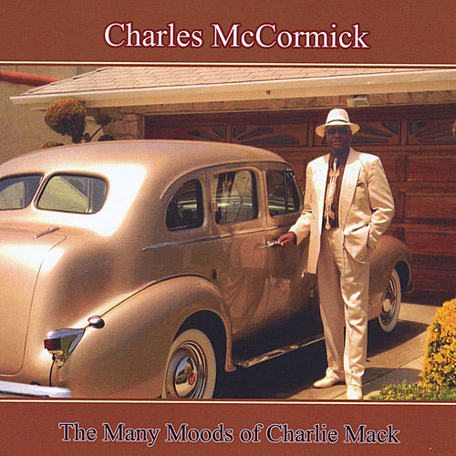

Charles McCormick
Charles Edward McCormick was an American musician. He was best known as the bassist, founding member, and one of the lead singers of the American R&B/soul and funk band Bloodstone.
Complete Discography & Tracklists (3)
2012 The Many Moods of Charlie Mack 🎵 13 Tracks
2022 In My Dream 🎵 0 Tracks
No tracks registered.